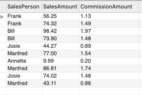
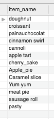

Topics covered:
Views are tables created with a SQL statement that are stored in a database
for quick and easy data retrieval at a later date. You would use one if
there was a particular query you find you run frequently in order to save
time and effort. A SELECT statement is used to create the table
and it is then stored in the database as an object.
Nested views can also be created whereby a view is created
based on another view rather than on an original table.
The code to create a view is as follows:
CREATE VIEW view_name AS
SELECT col1, col2, col3
FROM table_name;
Here is an example we produced in the lesson:
CREATE VIEW vw_sales_staff AS
SELECT SalesPerson, SalesAmount
FROM sales1;
Although we didn't cover this in class, an example in the Learning SQL book (Beaulieu, 2020) shows that you can assign names to the columns in the view:
CREATE VIEW customer_vw
(customer_id,
first_name,
last_name,
email
)
AS
SELECT
customer_id
first_name
last_name
concat(substr(email,1,2), '*****', substr(email, -4)) email
FROM customer;
In the above example, the column names for the view are given in brackets
after the CREATE VIEW statement. The SELECT
statement then fetches the relevant information from the customer
table. Note here than the middle parts of the email address have
been redacted from the view. This sort of thing is done for security
purposes and is an example of using a view to protect sensitive information
from being distributed. An email address in this column would appear as
"ro*****.com".
Once a view is created, it can be treated as a table. Data can be modified
and new records can be inserted into it using UPDATE or
INSERT statements. Updating a view in this way directly
modifies the underlying database and not just the view. This is useful if
someone has been given a view without access to the underlying database
but wants to add new records to the database. Their new records will
officially enter the actual database (and not just the view) without
having to give them full access to a database full of potentially
sensitive information. There are numerous restrictions, however, on the
types of statements you can use to modify a view. A view can't be updated
if it contains any of the following:
DISTINCTGROUP BYHAVINGUNION or UNION ALLWHERE clause that refers to a table in
the FROM clause
As a simple view is updateable, it is possible for someone to update the
data in the base tables that is not actually a part of the view or to
update the data so that something that was in the view is no longer part
of the view. An update like this makes the view inconsistent and is not
desirable. To avoid this type of thing happening, we can use a WITH
CHECK OPTION. This prevents a user from updating or inserting data
into the base tables that would not appear in the view. WITH CHECK
OPTION is added to the end of the CREATE VIEW code.
Here is an example from the lesson:
CREATE OR REPLACE VIEW vw_staff_common2 AS
SELECT
employeeID,
firstName,
lastName,
jobTitle,
managerID,
department
FROM
staff
WHERE
jobTitle LIKE '%DB%'
WITH CHECK OPTION;
In this example, if we try to add a new employee that would not appear in the view (i.e. an employee with a job title that does not contain the letters "DB"), then an error is returned and the record is not added. If the employee matches the desired criteria then the record is added to the database and the view is updated so that the new record also appears in the view.
There are four types of stored programs:
Stored functions and procedures contain written code that is saved in order for it to be used over and over again without having to type it out each time. They are stored as objects in the database.
Stored functions, sometimes referred to as User Defined Functions (UDF) to
avoid confusion with the built-in functions, contain SQL statements that
return a single value. They are run in a similar way to the built-in
functions. They can be used inside SELECT statements to return
a single value. They can't modify or change anything in the database so can't
execute INSERT, UPDATE or DELETE
statements.
The code to create a stored function is shown below. A key feature of this
code is that a delimiter is set. This is so that there is a distinction
between the end of statements within the function to be stored (for which
the usual ; symbol can still be used) and the end of the actual statement
that is creating the function (for which // is used). A function name must
also be declared. This can't be the same as any of the built-in functions.
Function parameters are also declared along with their data types. These can
be thought of as the input arugments you are using when you call the
function. You then have to declare the start and end of the function with a
BEGIN keyword and an END keyword. The SQL queries
that make up the function can be of any level of complexity and can include
joins, filters and other elements.
DELIMITER//
CREATE FUNCTION function_name(function_parameter1 DATA TYPE)
RETURNS DATA TYPE
BEGIN
function body;
RETURN expression;
END//
It can be a bit more difficult than you first think to write a function. Although the one we went through in class was easy to read through and to see how it worked, I found it a lot more difficult writing a function from scratch myself for homework. The following is the function I wrote for the homework. I decided to use a database table containing the total sales amounts for each sales person. I decided they would each get 2% commission and would create a stored function to calculate this. My experience on the Python course definitely came in useful for understanding how functions work in SQL!
DELIMITER //
CREATE FUNCTION commission(input_amount DECIMAL(4,2))
RETURNS DECIMAL(4,2)
DETERMINISTIC
BEGIN
DECLARE output_amount DECIMAL(4,2);
SET output_amount = 2 / 100 * input_amount;
RETURN output_amount;
END//
DELIMITER ;
To call the stored function, I then used the following code:
SELECT
SalesPerson,
SalesAmount,
commission(SalesAmount) AS CommissionAmount
FROM sales1;
And this is what the output looked like:

Stored procedures contain SQL statements that are used to read and modify
data. They are typically used for data validation and access control methods.
Unlike functions (and as demonstrated in the previous example) they can't be
used inside SELECT statements. However, they can use
INSERT, UPDATE, DELETE and SELECT
statements.
The syntax used to create a procedure is similar to that used for creating a function:
DELIMITER //
CREATE PROCEDURE proc_name()
BEGIN
procedure body;
END//
DELIMITER ;
Calling a prodecure is different to calling a function. You can't include a
procedure in a SELECT statement. You do it using the following
syntax:
CALL procedure_name();
Again we read through a procedure in class and had to write one from scratch for homework. I decided to write one that would return the names of all of the products sold in a bakery. This is how I did it:
DELIMITER //
CREATE PROCEDURE all_products()
BEGIN
SELECT sw.item_name FROM sweet AS sw
UNION
SELECT sa.item_name FROM savoury AS sa
END//
DELIMITER ;
I then ran the following to run the procedure:
CALL all_products()
This returned these results:

Triggers are blocks of code that run automatically when a DML operation like
INSERT, UPDATE or DELETE is run. The
execution of a trigger is often referred to as trigger firing.
Triggers can fire before or after the operation is run. The main purpose of
using a trigger is to maintain data consistency and integrity. For example,
you could create a trigger that will format the capitalisation of a new
record so that the capitalisation is consistent for every record in a table
(this is the example we ran through in class).
The following syntax is used to create a trigger. You need to choose if you
want to use the before or after keyword, which will specify whether the
trigger fires before or after the event. You then need to specify the
operation that will fire the trigger (INSERT, UPDATE
or DELETE). The FOR EACH ROW clause creates
a row level trigger that fires for each row. NEW and OLD
keywords can be used in the trigger body to represent the old and
new values to be inserted/updated/deleted (not shown below).
DELIMITER //
CREATE TRIGGER trigger_name
BEFORE/AFTER INSERT/UPDATE/DELETE ON table_or_view_name
FOR EACH ROW
BEGIN
trigger body;
END//
DELIMITER ;